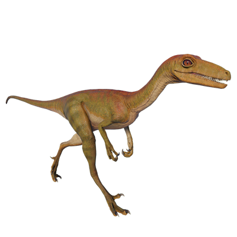

Useful Website
Troodon is a small, meat-eating dinosaur of the Troodon genus with long, thin legs that enable it to reach high speeds when chasing prey. Its name is Greek for ‘wounding tooth’, in reference to its sharp incisors, while this theropod’s large eyes allow it to hunt in the dark. Troodon’s large brain for its size – it stands at just over three feet tall – makes it one of the most intelligent dinosaurs.
